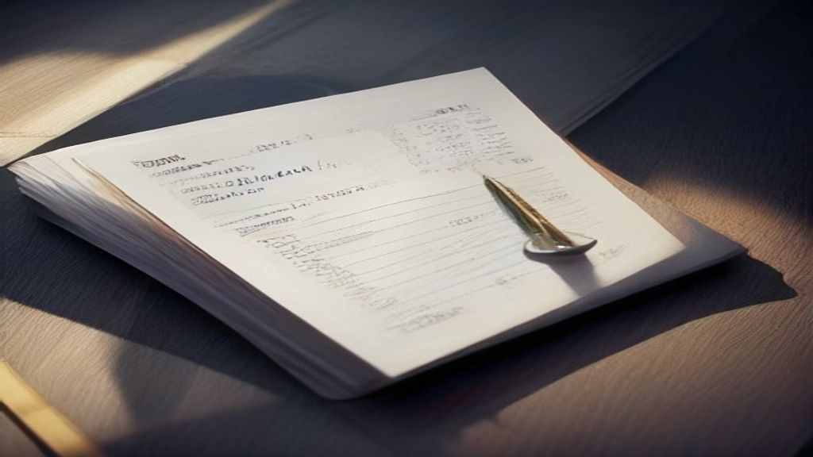

IPO Report Card: 30 to 60 Days After Listing — July 2026
TL;DR
- This report looks at 23 IPOs that listed between 32 and 59 days ago.
- Out of these, 9 companies are currently trading above their original IPO (Initial Public Offering) price.
- 14 companies are currently trading below their original IPO price.
- The highest return from the IPO price in this batch is 145.4% for Merritronix Ltd.
- The lowest return from the IPO price is -79.04% for UHM Vacation Ltd.
- Some IPOs that saw gains on their listing day are now trading below their issue price.
Why look 30 to 60 days after listing?
When a company first offers its shares to the public through an IPO, there's often a lot of excitement. The "listing day" (the first day shares are traded on the stock exchange) can see prices jump or fall sharply. This initial change from the IPO price is called the "listing gain" (or loss).
However, this first-day price can be quite volatile (meaning it can change a lot very quickly) due to high demand or supply. Many new investors might buy shares hoping for quick profits, while some existing shareholders might sell. Also, a special group of investors called "anchor investors" often have their shares locked in for 30 days, meaning they cannot sell them during that period.
By looking at prices 30 to 60 days after listing, we get a calmer picture. The initial frenzy usually fades, and the anchor investor lock-in period is over. This allows the market to settle and reflect what investors currently think the company's shares are worth, beyond the initial excitement. It gives us a more stable view of how the IPO has performed.
The scorecard
Here's how the recent IPOs have performed after the initial excitement has settled:
| Company | Type | IPO price (₹) | Listing close (₹) | Listing gain (%) | Price now (₹) | Change vs IPO price (%) | Days since listing |
|---|---|---|---|---|---|---|---|
| Avience Biomedicals Ltd. | SME | 208.0 | 414.95 | 99.5 | 259.75 | 24.88 | 32 |
| Leapfrog Engineering Services Ltd. | SME | 23.0 | 23.1 | 0.43 | 22.23 | -3.35 | 33 |
| Liotech Industries Ltd. | SME | 321.0 | 244.15 | -23.94 | 96.5 | -69.94 | 33 |
| Diksha Polymers Ltd. | SME | 112.0 | 120.2 | 7.32 | 119.0 | 6.25 | 33 |
| Clay Craft India Ltd. | SME | 203.0 | 221.55 | 9.14 | 170.2 | -16.16 | 33 |
| Horizon Reclaim (India) Ltd. | SME | 103.0 | 147.3 | 43.01 | 144.3 | 40.1 | 38 |
| Susan Electricals India Ltd. | SME | 127.0 | 195.3 | 53.78 | 229.0 | 80.31 | 39 |
| Utkal Speciality Industries India Ltd. | SME | 66.0 | 62.7 | -5.0 | 38.35 | -41.89 | 40 |
| Hexagon Nutrition Ltd. | Mainboard | 45.0 | 53.19 | 18.2 | 65.51 | 45.56 | 45 |
| Genxai Analytics Ltd. | SME | 116.0 | 97.4 | -16.03 | 70.7 | -39.05 | 45 |
| Vahh Chemicals Ltd. | SME | 60.0 | 66.5 | 10.83 | 52.42 | -12.63 | 46 |
| UHM Vacation Ltd. | SME | 166.0 | 126.2 | -23.98 | 34.79 | -79.04 | 46 |
| CMR Green Technologies Ltd. | Mainboard | 192.0 | 241.2 | 25.62 | 218.05 | 13.62 | 47 |
| SMR Jewels Ltd. | SME | 128.0 | 103.05 | -19.49 | 89.0 | -30.47 | 49 |
| Merritronix Ltd. | SME | 149.0 | 297.25 | 99.5 | 365.65 | 145.4 | 49 |
| Aureate Tradde Ltd. | SME | 70.0 | 66.5 | -5.0 | 30.75 | -56.07 | 52 |
| Rajnandini Fashion India Ltd. | SME | 63.0 | 60.57 | -3.86 | 34.12 | -45.84 | 54 |
| Harikanta Overseas Ltd. | SME | 91.0 | 75.77 | -16.74 | 74.49 | -18.14 | 55 |
| Yaashvi Jewellers Ltd. | SME | 83.0 | 87.05 | 4.88 | 72.0 | -13.25 | 55 |
| M R Maniveni Foods Ltd. | SME | 52.0 | 41.13 | -20.9 | 30.25 | -41.83 | 56 |
| Bio Medica Laboratories Ltd. | SME | 139.0 | 115.8 | -16.69 | 138.7 | -0.22 | 59 |
| Autofurnish Ltd. | SME | 41.0 | 45.15 | 10.12 | 58.88 | 43.61 | 59 |
| Q-Line Biotech Ltd. | SME | 343.0 | 474.6 | 38.37 | 505.75 | 47.45 | 59 |
This batch includes 2 Mainboard IPOs and 21 SME (Small and Medium Enterprises) IPOs. While some companies have seen significant gains since their IPO price, others are trading below their initial offer. The range of performance is wide, from a gain of 145.4% to a loss of -79.04%.
Reading each listing (what the numbers say)
Avience Biomedicals Ltd.
This SME IPO was issued at ₹208.0 per share. On its listing day, it closed at ₹414.95, marking a significant listing gain of 99.5%. As of today, its current price is ₹259.75, which means it is trading 24.88% above its IPO price. If you were allotted shares at the IPO price, your investment would show a gain of 24.88%.
Leapfrog Engineering Services Ltd.
This SME IPO had an issue price of ₹23.0 per share. It closed at ₹23.1 on its listing day, showing a small listing gain of 0.43%. Currently, its price is ₹22.23, meaning it is trading 3.35% below its IPO price. If you were allotted shares, your investment would show a loss of 3.35% compared to the IPO price.
Liotech Industries Ltd.
This SME IPO was issued at ₹321.0 per share. On its listing day, it closed at ₹244.15, which was a listing loss of 23.94%. Today, its price is ₹96.5, indicating it is trading 69.94% below its IPO price. If you were allotted shares, your investment would show a loss of 69.94%.
Diksha Polymers Ltd.
This SME IPO had an issue price of ₹112.0 per share. It closed at ₹120.2 on its listing day, resulting in a listing gain of 7.32%. Currently, its price is ₹119.0, meaning it is trading 6.25% above its IPO price. If you were allotted shares, your investment would show a gain of 6.25%.
Clay Craft India Ltd.
This SME IPO was issued at ₹203.0 per share. On its listing day, it closed at ₹221.55, showing a listing gain of 9.14%. As of today, its current price is ₹170.2, which means it is trading 16.16% below its IPO price. If you were allotted shares, your investment would show a loss of 16.16%.
Horizon Reclaim (India) Ltd.
This SME IPO had an issue price of ₹103.0 per share. It closed at ₹147.3 on its listing day, marking a listing gain of 43.01%. Currently, its price is ₹144.3, meaning it is trading 40.1% above its IPO price. If you were allotted shares, your investment would show a gain of 40.1%.
Susan Electricals India Ltd.
This SME IPO was issued at ₹127.0 per share. On its listing day, it closed at ₹195.3, showing a listing gain of 53.78%. Today, its price is ₹229.0, indicating it is trading 80.31% above its IPO price. If you were allotted shares, your investment would show a gain of 80.31%.
Utkal Speciality Industries India Ltd.
This SME IPO had an issue price of ₹66.0 per share. It closed at ₹62.7 on its listing day, resulting in a listing loss of 5.0%. Currently, its price is ₹38.35, meaning it is trading 41.89% below its IPO price. If you were allotted shares, your investment would show a loss of 41.89%.
Hexagon Nutrition Ltd.
This Mainboard IPO was issued at ₹45.0 per share. On its listing day, it closed at ₹53.19, showing a listing gain of 18.2%. Today, its price is ₹65.51, indicating it is trading 45.56% above its IPO price. If you were allotted shares, your investment would show a gain of 45.56%.
Genxai Analytics Ltd.
This SME IPO had an issue price of ₹116.0 per share. It closed at ₹97.4 on its listing day, resulting in a listing loss of 16.03%. Currently, its price is ₹70.7, meaning it is trading 39.05% below its IPO price. If you were allotted shares, your investment would show a loss of 39.05%.
Vahh Chemicals Ltd.
This SME IPO was issued at ₹60.0 per share. On its listing day, it closed at ₹66.5, showing a listing gain of 10.83%. As of today, its current price is ₹52.42, which means it is trading 12.63% below its IPO price. If you were allotted shares, your investment would show a loss of 12.63%.
UHM Vacation Ltd.
This SME IPO had an issue price of ₹166.0 per share. It closed at ₹126.2 on its listing day, resulting in a listing loss of 23.98%. Currently, its price is ₹34.79, meaning it is trading 79.04% below its IPO price. If you were allotted shares, your investment would show a loss of 79.04%.
CMR Green Technologies Ltd.
This Mainboard IPO was issued at ₹192.0 per share. On its listing day, it closed at ₹241.2, showing a listing gain of 25.62%. Today, its price is ₹218.05, indicating it is trading 13.62% above its IPO price. If you were allotted shares, your investment would show a gain of 13.62%.
SMR Jewels Ltd.
This SME IPO had an issue price of ₹128.0 per share. It closed at ₹103.05 on its listing day, resulting in a listing loss of 19.49%. Currently, its price is ₹89.0, meaning it is trading 30.47% below its IPO price. If you were allotted shares, your investment would show a loss of 30.47%.
Merritronix Ltd.
This SME IPO was issued at ₹149.0 per share. On its listing day, it closed at ₹297.25, showing a listing gain of 99.5%. Today, its price is ₹365.65, indicating it is trading 145.4% above its IPO price. If you were allotted shares, your investment would show a gain of 145.4%.
Aureate Tradde Ltd.
This SME IPO had an issue price of ₹70.0 per share. It closed at ₹66.5 on its listing day, resulting in a listing loss of 5.0%. Currently, its price is ₹30.75, meaning it is trading 56.07% below its IPO price. If you were allotted shares, your investment would show a loss of 56.07%.
Rajnandini Fashion India Ltd.
This SME IPO was issued at ₹63.0 per share. On its listing day, it closed at ₹60.57, showing a listing loss of 3.86%. Today, its price is ₹34.12, indicating it is trading 45.84% below its IPO price. If you were allotted shares, your investment would show a loss of 45.84%.
Harikanta Overseas Ltd.
This SME IPO had an issue price of ₹91.0 per share. It closed at ₹75.77 on its listing day, resulting in a listing loss of 16.74%. Currently, its price is ₹74.49, meaning it is trading 18.14% below its IPO price. If you were allotted shares, your investment would show a loss of 18.14%.
Yaashvi Jewellers Ltd.
This SME IPO was issued at ₹83.0 per share. On its listing day, it closed at ₹87.05, showing a listing gain of 4.88%. As of today, its current price is ₹72.0, which means it is trading 13.25% below its IPO price. If you were allotted shares, your investment would show a loss of 13.25%.
M R Maniveni Foods Ltd.
This SME IPO had an issue price of ₹52.0 per share. It closed at ₹41.13 on its listing day, resulting in a listing loss of 20.9%. Currently, its price is ₹30.25, meaning it is trading 41.83% below its IPO price. If you were allotted shares, your investment would show a loss of 41.83%.
Bio Medica Laboratories Ltd.
This SME IPO was issued at ₹139.0 per share. On its listing day, it closed at ₹115.8, showing a listing loss of 16.69%. Today, its price is ₹138.7, indicating it is trading 0.22% below its IPO price. If you were allotted shares, your investment would show a loss of 0.22%.
Autofurnish Ltd.
This SME IPO had an issue price of ₹41.0 per share. It closed at ₹45.15 on its listing day, resulting in a listing gain of 10.12%. Currently, its price is ₹58.88, meaning it is trading 43.61% above its IPO price. If you were allotted shares, your investment would show a gain of 43.61%.
Q-Line Biotech Ltd.
This SME IPO was issued at ₹343.0 per share. On its listing day, it closed at ₹474.6, showing a listing gain of 38.37%. Today, its price is ₹505.75, indicating it is trading 47.45% above its IPO price. If you were allotted shares, your investment would show a gain of 47.45%.
Why do IPOs pop or drop on listing?
An IPO's listing performance is mainly a result of demand versus supply.
- Demand: How many investors want to buy the shares. This is often measured by subscription levels (how many times the IPO was oversubscribed, meaning more bids came in than shares offered). High subscription levels usually mean high demand.
- Supply: The number of shares the company offers to the public.
- Pricing: The price at which the company offers its shares. If the shares are priced attractively (meaning the company asks for a price that many investors feel is a good deal), demand tends to be higher.
- Market mood: The overall sentiment of the stock market at the time of listing. A generally positive market can boost an IPO, while a negative one can weigh it down.
If demand is much higher than supply, and the shares are priced attractively in a good market, the price can "pop" (increase) on listing. If demand is low, or the shares are seen as overpriced, the price might "drop" (decrease).
Anchor investors are large institutional investors who commit to buying shares before the IPO opens to the public. Their participation can signal confidence in the IPO. Their shares are typically subject to a lock-in period (a time during which they cannot sell their shares), usually 30 days. This lock-in can temporarily reduce the supply of shares in the market.
Why the first-day price is not the whole story
The listing day price reflects immediate market sentiment and demand. It's often influenced by short-term traders looking for quick profits. This can lead to high volatility (rapid price changes) on the first day.
A stock might list with a big gain, but if the underlying business doesn't meet expectations, or if the broader market (the overall stock market) turns negative, that gain might not last. Conversely, a stock might list flat or with a small loss, but if the company performs well over time, its price can rise significantly later. The first-day price is just one data point; the company's long-term performance and market conditions play a larger role in its sustained share price.
A simple way to think about it
Imagine a popular new food stall opening at a school fete. On the first day, everyone rushes to buy, creating a long queue and maybe even pushing up the price of the special dish. This is like the IPO listing day frenzy.
But after a month or two, the initial excitement settles. People have tried the food, word has spread, and other stalls have opened. The price of the dish then reflects its actual popularity and perceived value among regular customers, not just the initial rush. This calmer, more stable price is similar to how a stock's price settles 30-60 days after its IPO.
Things people get confused about
Myth → Fact:
- Myth: A big listing gain means it's a great company and its shares will keep rising.
- Myth: If an IPO lists below its issue price, it's a bad company and should be avoided forever.
- Myth: The IPO price is the "right" price for a company's shares.
Fact: A big listing gain only indicates strong initial demand for the shares. It doesn't guarantee the company's future performance or that the share price will continue to increase.
Fact: A listing loss means the initial market demand was lower than the supply at the IPO price. It doesn't necessarily mean the company is "bad"; its performance can improve over time, or market sentiment might change.
Fact: The IPO price is the starting point set by the company and its bankers. Once listed, the market (buyers and sellers) determines the ongoing "right" price based on many factors.
FAQ
What is an SME IPO?
An SME IPO (Small and Medium Enterprises Initial Public Offering) is when smaller companies raise capital by listing their shares on a dedicated platform for SMEs on exchanges like NSE or BSE, with different rules compared to mainboard listings.
What is a Mainboard IPO?
A Mainboard IPO is when larger, more established companies list their shares on the main platforms of stock exchanges like the National Stock Exchange (NSE) or Bombay Stock Exchange (BSE), typically involving larger issue sizes and stricter compliance.
What does 'issue price' mean?
The 'issue price' is the fixed price per share at which the company offers its shares to the public during the IPO.
What does 'listing close' mean?
The 'listing close' is the price at which a company's shares end their first day of trading on the stock exchange.
What does 'current price' mean?
The 'current price' is the latest available market price of the share on the stock exchange as of the date of this report.
This is an educational explainer, not investment advice. Past performance is not indicative of future results. myfinancial is not a SEBI-registered adviser.